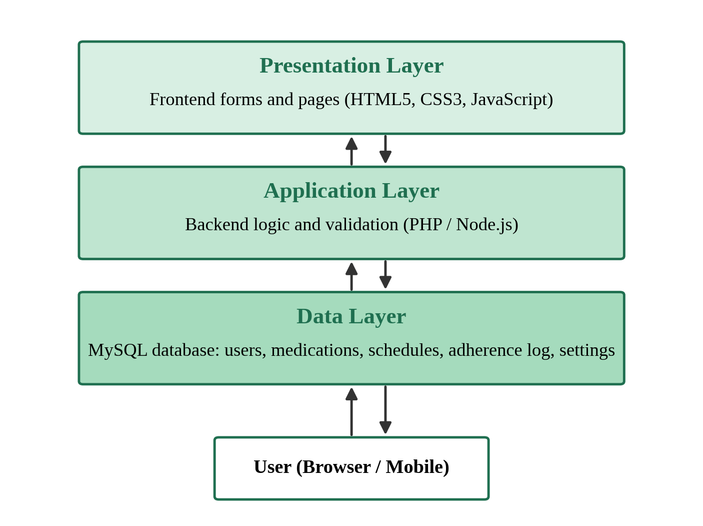
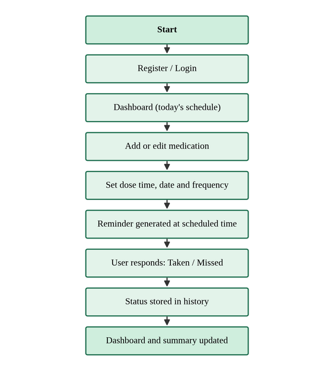
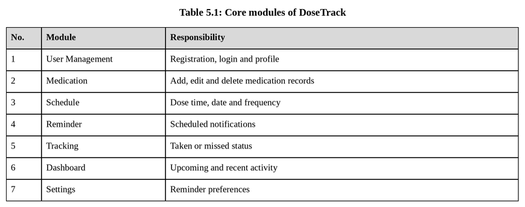
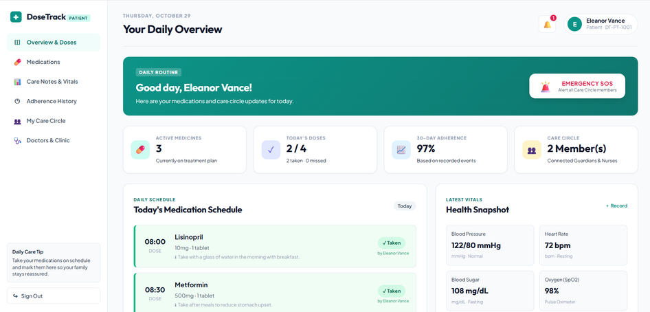
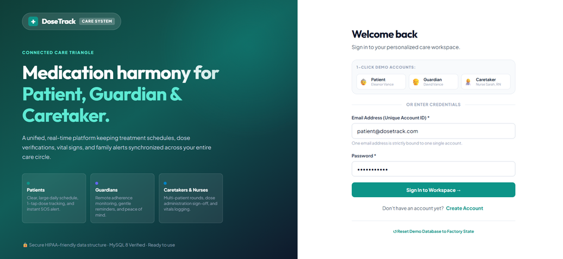
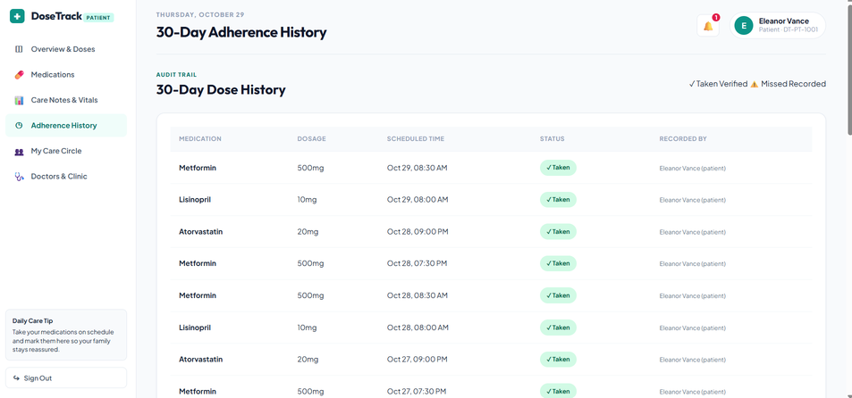
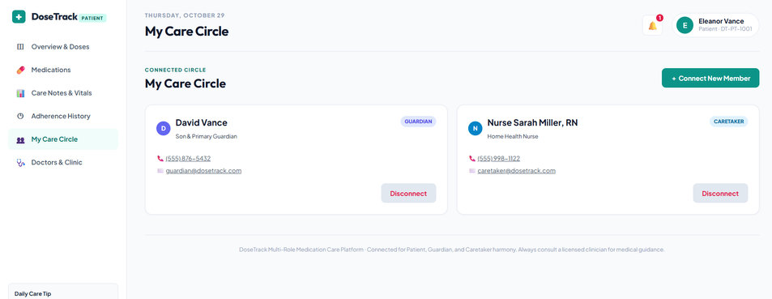
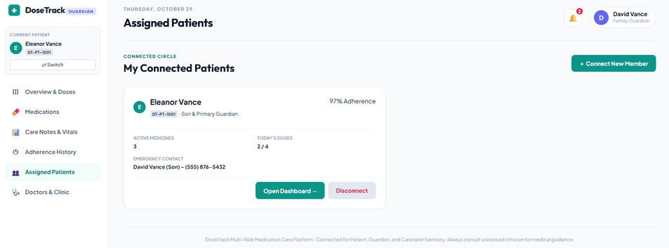
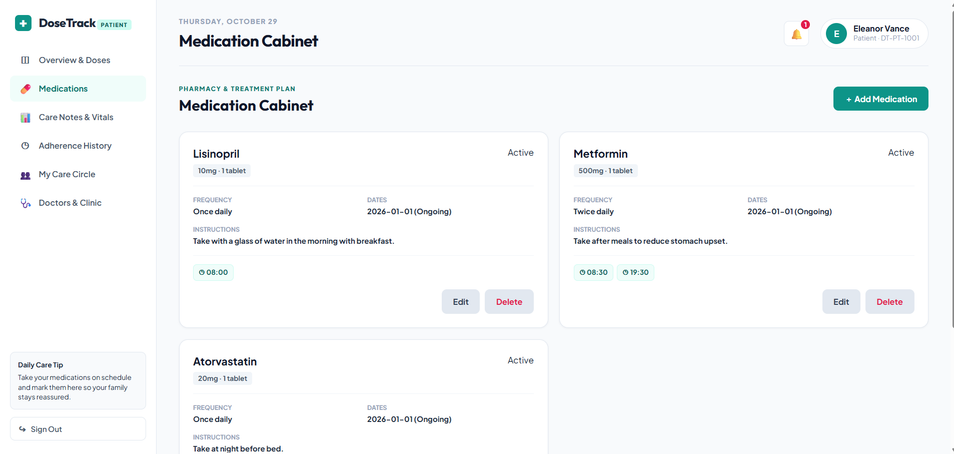

DoseTrack
Medication Reminder & Adherence Monitoring System
A centralized digital platform for dosage scheduling, automated timely reminders, compliance tracking, and physician contact access.
Mukkam, Kozhikode, Kerala
Project Abstract
Centralized digital medication management, scheduled alerts, and adherence audit history.
A smart web-based digital healthcare system engineered to streamline daily medication regimens into a structured, unified workflow:
- ✓ Medication Management: Store medicine names, dosages, quantity, instructions, and duration.
- ✓ Schedule Configuration: Configure exact dose timings (e.g., 08:00 AM, 08:00 PM) and daily frequency.
- ✓ Automated Reminders: Real-time alerts notified at specified times to prevent forgotten intakes.
- ✓ Adherence Monitoring: Record whether each dose was Taken or Missed with timestamps.
- ✓ Doctor-Contact Access: Access stored doctor profiles, specializations, and clinic contact options.
Traditional non-centralized methods commonly used by patients introduce serious vulnerabilities in treatment consistency:
- ✗ Memory-Based Tracking: High risk of human error, forgotten doses, or unintended double-dosing.
- ✗ Scattered Alarms & Paper Notes: Disconnected phone alarms lack medicine details, dosage, and special instructions.
- ✗ Multi-Drug Complexity: Managing varying timings and frequencies across 3+ medicines causes confusion.
- ✗ No Centralized History: Patients and doctors have no reliable log to verify past medication adherence.
- ✗ Isolated Contacts: Emergency clinic numbers are kept on papers or separate phonebooks.
Problem Statement
Challenges in manual medication tracking and scattered health routines.
Project Objectives
Six distinct technical and functional goals defined in the project scope.
Literature Survey & Existing Approaches
Analysis of existing adherence systems and motivation for a software-based platform.
| Study / Approach | Technology Used | Key Strengths | Limitations Identified |
|---|---|---|---|
| Moshnyaga et al. (2016) Dementia Adherence Monitoring |
Kinect sensor, vocal guidance & caregiver alerts | Actively monitors medication-taking activities rather than relying solely on alarms. | Specialized sensing equipment increases cost and deployment complexity. |
| Rajan et al. (2021) Smart Pill Box with Auto-Fill |
Arduino, GSM communication, IoT & Blynk App | Automated physical pill alerts and medicine supply monitoring. | Requires dedicated hardware equipment, continuous connectivity, and maintenance. |
| Srinivas et al. (2018) Intelligent Medicine Box |
IoT hardware, vital sign sensors & Android app | Combines adherence reminders with abnormal vital sign alerts to guardians. | Sensor-based systems increase hardware dependencies and maintenance overhead. |
| Mason et al. (2022) Adherence Technology Review |
Electronic pill boxes, bottles, sensors & self-reporting | Comprehensive review of usability, cost, and implementation factors. | Recording hardware activity does not always confirm actual medicine consumption. |
Proposed System – DoseTrack
Centralized hub-and-spoke model integrating all medication management functions.
DoseTrack Core
Unified Web Application & Relational MySQL Backend
Project Methodology
Eight-stage sequential engineering approach followed throughout project development.
Identified challenges in manual medicine tracking, multi-dose routines, and clinical adherence needs.
Architected the 3-layer structure (Presentation, Logic, Data) and defined module interactions.
Modeled relational MySQL schema with users, medications, schedules, dose_events, and doctors.
Implemented clean, responsive healthcare interfaces using semantic HTML5, CSS3, and JavaScript.
Programmed backend route handlers, authentication verification, and medication CRUD business logic.
Engineered automated schedule-checking, reminder dispatching, and Taken/Missed status persistence.
Conducted functional testing of user authentication, CRUD operations, schedule triggers, and database links.
Integrated presentation, logic, and database tiers into a seamless, accessible healthcare platform.
System Architecture
Three-layer architecture separating presentation, business logic, and relational storage.

Frontend forms, responsive dashboard, medication modal dialogs, schedule configuration forms, real-time alert banners, and doctor contact cards.
Backend business logic, request validation, authentication & session verification, medication CRUD operations, schedule matching algorithms, and adherence logging.
Relational storage managing `users`, `medications`, `schedules`, `dose_events` (adherence log), `doctors`, and user notification settings with foreign key integrity.
Application Workflow
Sequential user journey from login to medication scheduling, reminder alerts, and adherence logging.

Authenticate securely into personalized account workspace.
View today's scheduled doses, completed doses, and vitals snapshot.
Input drug name, dosage, frequency, and exact dose timings (e.g., 08:30 AM).
System detects due dose time and notifies patient on the dashboard.
Event recorded in MySQL database history and dashboard statistics refreshed.
Algorithms & Core Logic
Deterministic rule-based workflows powering authentication, CRUD, reminders, and adherence monitoring.
Modules Developed
Seven core interconnected functional modules documented in Table 5.1 of the project report.

Technology Stack
Proven web and database technologies referenced in the project report.
User interface & interactive presentation
- ✓ HTML5: Semantic page structure, modal dialogs, and accessible input forms.
- ✓ CSS3: Responsive layout grids, healthcare color tokens, status badges, and smooth transitions.
- ✓ JavaScript: Dynamic DOM rendering, asynchronous fetch API communication, and client-side validation.
Server-side logic & API orchestration
- ✓ Node.js / Express: Lightweight, event-driven RESTful API endpoints and middleware routing.
- ✓ PHP Support: Server-side logic execution and script verification cited in Chapter 6.
- ✓ Authentication: Secure password hashing and session management.
Persistent storage & version control
- ✓ MySQL: Relational DBMS managing tables, foreign keys, and indexed queries.
- ✓ Git: Distributed version control for source code tracking and collaboration.
- ✓ Standards: MDN Web Docs standards compliance and MySQL Reference Manual.
Database & Data Management
Relational MySQL schema ensuring structured storage, integrity, and audit logging.
- ✓ Centralized Storage: Eliminates scattered paper notes and uncoordinated alarms.
- ✓ Cascading Integrity: Deleting a medicine automatically removes associated schedules and reminder logs (`ON DELETE CASCADE`).
- ✓ Adherence Audit Trail: Each dose marked as Taken or Missed is stored with an immutable timestamp for physician reviews.
- ✓ Indexed Queries: Optimized database indexes (`idx_med_user_dates`, `idx_schedule_user_active`) ensure instant dashboard rendering.
Application Interfaces – Patient Core
Actual interface screenshots from Appendices (Pages 21–22) of the DoseTrack project report.



Application Interfaces – Adherence & Care
Audit logging, physician directory, and care collaboration screens from Report Appendices.



Implementation & Key Functionalities
Checklist of fully developed functional capabilities verified in the working prototype.
Secure account signup, login verification, password hashing, and personalized session isolation.
Centralized CRUD operations for medicine names, dosage strengths, frequency, duration, and instructions.
Configurable dosage timings (e.g., 08:00 AM, 08:30 PM), daily intake frequency, and active schedule flags.
Real-time notification engine alerting patients when scheduled medication timings become due.
Interactive action buttons allowing users to record dose outcomes with real-time database updates.
Complete historical log of scheduled times, actual recorded times, and dose compliance records.
At-a-glance visualization of daily dose count, adherence percentage, and upcoming alarms.
Physician contact directory, clinic timings, appointment inquiry, and relational MySQL persistence.
Results & Functional Analysis
Verification of implemented outcomes against project objectives and functional analysis.
| Expected Outcome (Objectives) | Implemented Result in DoseTrack | Verification Status |
|---|---|---|
| Centralized Medication Management | Stores medicine details, dosage, frequency, and instructions in one unified cabinet. | ✓ Implemented |
| Medication Scheduling | Allows configuring custom dose timings and frequencies linked directly to medicines. | ✓ Implemented |
| Automated Reminders | Reminder engine triggers visual alert notifications when dose times become due. | ✓ Implemented |
| Dose Adherence Tracking | Allows patients to record whether scheduled doses were Taken or Missed. | ✓ Implemented |
| Adherence History Log | Maintains an auditable 30-day chronological record of dose events in MySQL. | ✓ Implemented |
| Interactive Dashboard | Centralizes today's medication routine, progress counter, and compliance percentage. | ✓ Implemented |
| Doctor-Contact Access | Provides stored doctor profiles, clinic hours, phone numbers, and appointment options. | ✓ Implemented |
Limitations & Future Scope
Current operational boundaries and planned technical enhancements from Chapter 7.
Identified constraints in the Phase 1 web implementation:
- ✗ User Input Dependency: System relies on the user entering correct medicine details, dosages, and timings.
- ✗ Notification Environment: Reminder delivery depends on active device settings, browser permissions, and device sound.
- ✗ Self-Reported Adherence: Dose status is recorded by user input; system cannot physically verify chemical ingestion.
- ✗ Non-Diagnostic Scope: DoseTrack does not diagnose, prescribe, or give medical advice; medical decisions remain with doctors.
- ✗ Deployment Boundary: Currently deployed as a responsive web system with scope for broader mobile deployment.
Planned features for subsequent development phases:
- ✓ Mobile App with Push Alerts: Dedicated Android & iOS application with native system-level alarm daemons.
- ✓ QR / Barcode Medicine Entry: Scan pharmaceutical packaging or prescription QR codes for automated entry.
- ✓ Medicine Refill Alerts: Automated inventory tracking alerting patients when medicine stock is running low.
- ✓ Caregiver / Family Access: Real-time alerts sent to designated family members when a critical dose is missed.
- ✓ Exportable Adherence Reports: One-click PDF generation of 30-day compliance reports for clinical consultations.
Project Conclusion
DoseTrack successfully delivers a centralized, accessible digital solution that resolves the persistent challenges of forgotten medication doses and scattered health routines. By harmonizing medication scheduling, automated reminders, real-time Taken/Missed dose recording, adherence audit history, and direct doctor contact access, the application proves that a practical web-based system can significantly improve daily treatment consistency and patient peace of mind.